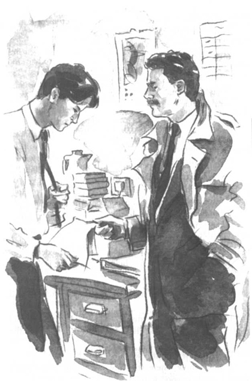

Listen to Part 1:
Tom cố quên đi đám cưới của Rita. Anh làm việc chăm chỉ tại thư viện trong ngày. Anh học muộn vào nhiều giờ trong đêm. Đôi lúc anh cố gắng vẽ tranh.
‘Rita đã đi mất mãi mãi’, anh tự nhủ. ‘Mình phải cố gắng quên cô ấy.’
Nhưng Tom nghĩ về Rita mọi lúc. Anh nằm mơ về cô ấy trong đêm.
Vào ngày cuối cùng của tháng Ba, một người đàn ông trung niên bước vào thư viện. Ông ta mặc áo choàng và bộ đồ tối màu.
‘Tôi có thể giúp gì ông không?’, Tom hỏi.
‘Được,’ người đàn ông nói. ‘Ở đây có ông Tom Cutter nào không?’
‘Tôi là Tom Cutter.’
‘Tôi là thanh tra thám tử Finch của Sở Cảnh sát Silverton. Tôi có thể nói chuyện riêng với ông được không?’
Tom và viên thanh tra vào phòng làm việc nhỏ phía sau thư viện.
‘Ông tìm tôi để làm gì?’, Tom hỏi.
Listen to Part 2:
Viên thanh tra lấy vài tờ giấy từ trong túi áo choàng.
‘Ông đã từng thấy những tờ này chưa?’, ông ta hỏi. Ông ta đưa mấy tờ giấy cho Tom.
Tom nhìn vào mấy tờ giấy. Có chữ ký của anh và địa chỉ thư viện. Chữ ký của Rita cũng có ở đấy nhưng không có địa chỉ của cô ấy.
‘Đây là chữ ký của tôi,’ Tom nói, ‘và nét viết tay cũng của tôi. Nhưng tôi không nhớ gì về mấy thứ này.’
Viên thanh tra lấy ra một bức ảnh.
‘Ông có biết người đàn ông này không?’, ông ta hỏi. ‘Hắn tự xưng nhiều tên khác nhau.’
Tom nhìn vào bức ảnh. Đó là ảnh của một người đàn ông đầu hói. Ông ta đeo kính màu đỏ.
‘Đó là ông Spooner,’ Tom nói. ‘Nhưng ông ấy không đeo kính khi tôi gặp ông ấy.’
‘Spooner, ừ nhỉ? Hắn chưa từng dùng cái tên đó trước đây.’
‘Ông ta là ai? Ông ta đã làm gì vậy?’, Tom hỏi.
Listen to Part 3:
‘Tên thật của hắn là Keith Dutton,’ viên thanh tra nói. ‘Hắn là kẻ lừa bịp.’
‘Kẻ lừa bịp?’
‘Là kẻ lừa người khác để lấy tiền. Ông đã giúp hắn lấy tiền từ một ngân hàng.’
‘Tôi giúp ông ta!’, Tom nói. ‘Bằng cách nào?’
‘Ông đã ký tờ giấy này cho hắn. Trong đó nói nếu Spooner nợ tiền ngân hàng, ông sẽ phải trả lại.’
‘Nhưng tôi không nói là mình sẽ làm vậy,’ Tom nói.
‘Ông đã ký vào tờ giấy này rồi,’ viên thanh tra nói.
Tom lúc này mới nhớ. Trong quán cà phê, anh từng ký vào hợp đồng của Rita. Anh thật ngu ngốc!
Tom kể cho viên thanh tra nghe chuyện đã xảy ra.
‘Ông đã vi phạm pháp luật rồi, Tom ạ,’ viên thanh tra nói. ‘Ông ký vào tờ giấy đó. Ông đã giúp Spooner cướp tiền từ ngân hàng.’
Listen to Part 4:
‘Nhưng tôi không biết Spooner định làm gì mà!’, Tom nói.
‘Nếu đúng như ông nói, thì bây giờ ông phải giúp chúng tôi,’ viên thanh tra nói. ‘Ông phải giúp chúng tôi tìm ra Spooner và cô gái.’
Tom nghĩ một lúc. Sau đó, anh nghĩ ra một ý.
‘Tôi không biết hiện giờ họ ở đâu,’ Tom nói. ‘Nhưng tôi nghĩ tôi có thể giúp ông.’
Tom lấy giấy mời đám cưới của Rita ra khỏi ngăn kéo. Sau đó, anh đến bên máy photocopy và tạo bản sao giấy mời.

‘Ông đã ký vào tờ giấy này,’ viên thanh tra nói.
Tom đưa cho viên thanh tra bản sao giấy mời đám cưới.
‘Các người có thể bắt giữ bọn họ tại đám cưới,’ anh ta nói.
‘Ông sẽ xác định danh tính của bọn họ chứ?’, viên thanh tra hỏi. ‘Ông sẽ chỉ Rita và ông Spooner cho chúng tôi chứ? Chúng tôi phải đảm bảo rằng mình đã bắt đúng người.’
Listen to Part 5:
‘Tất nhiên rồi,’ Tom nói. ‘Tôi sẽ hôn Rita và bắt tay Spooner.’
‘Được,’ viên thanh tra nói. ‘Đừng nói cho bọn họ biết những gì chúng tôi định làm. Và đừng có cố chơi mẹo gì. Nếu không chúng tôi cũng sẽ bắt giữ ông.’